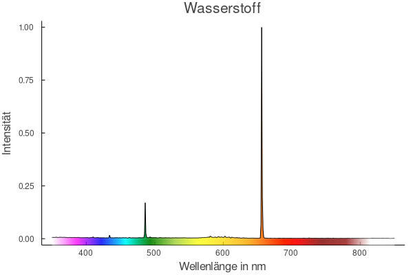
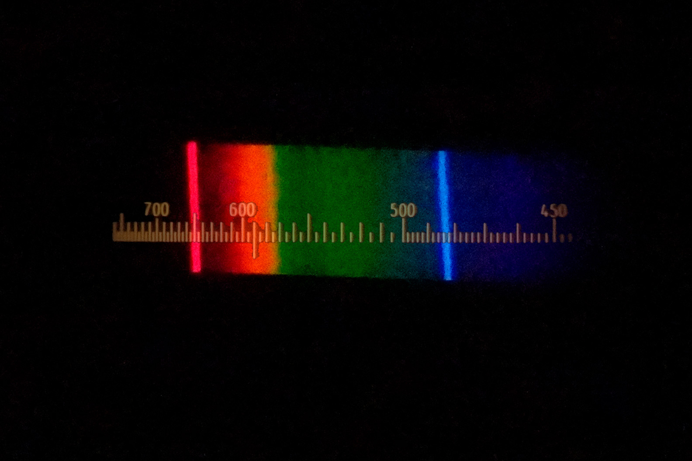

CCD-Spektrometer



Das Spektrum der Wasserstoff-Lampe ist ein Linienspektrum. Es besteht aus vier Linien im sichtbaren Bereich des Lichtes. Deutlich zu erkennen sind die Linien bei den Wellenlängen 486 nm (blau) und 656 nm (rot). Zwei weitere Linien liegen bei 434 nm und 410 nm im violetten Bereich. Diese sind hier kaum zu erkennen.